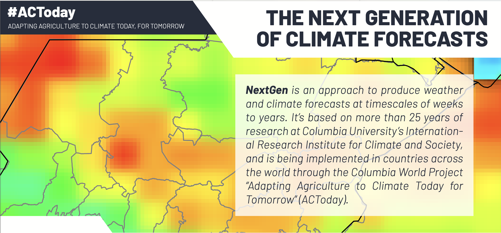

The NextGen Approach#
{kind=link}
PyCPT was designed to implement the next-generation of seasonal forecasts for climate services at National Meteorological and Hydrological Services (NMHSs) in the Global South.
In the NextGen approach, the user’s demand is at the core of the design of the forecast system. The demand defines the predictand(s) to focus on, which in turns defines which processes or mechanisms control the behavior of the predictands, and lead to the identification of which predictor(s) to use. This same demand-driven workflow is used to identify which forecast attributes, and skill metrics are needed, which in turns defines which calibration methods to explore, and how to present the predictions (probabilistic, deterministic or both; terciles, quintiles, the entire probability density function, etc.).
NextGen capitalizes on the new availability of GCM seasonal climate prediction datasets in real time from NOAA’s North American Multimodel Ensemble (NMME) project and the European Union’s Copernicus Climate Change Service (C3S). It closely follows the WMO’s revised Guidelines for Operational Climate Prediction, and includes an emphasis on expanding seasonal climate forecasts to user-relevant variables and flexible thresholds. The NextGen approach contrasts with the previously typical approach of using antecedent SST patterns as predictors of seasonal rainfall.
More recent development of GCM seasonal climate prediction using coupled ocean-atmosphere GCMs and sophisticated data assimilation has resulted in improved predictions of precipitation. NextGen capitalizes on this advance to use the GCMs’ seasonal forecasts of precipitation over the target region directly, and is based on correcting the model biases inherent in GCM output, and to “re-calibrate” the GCMs’ forecasts against newly available high-resolution observed country-level datasets, such as from the ENACTS initiative in Africa. This is known as the “Model Output Statistics” (MOS) approach, because it uses statistics of the model output over the hindcast period.
NextGen emphasizes the combination of forecasts from multiple GCMs, an established approach for increasing the skill of seasonal forecasts. (As a medical analogy, multiple drugs are routinely used in combination in the treatment of hypertension, AIDS or cancer.)
Important
A prerequisite for NextGen is the availability of multiple sets of GCM hindcasts over a common set of past years, for which the predicted observed data is also available; this requirement often clashes with the need for a hindcast period that is sufficiently long for robust estimation of the regression parameters and resulting cross-validated hindcast skill.